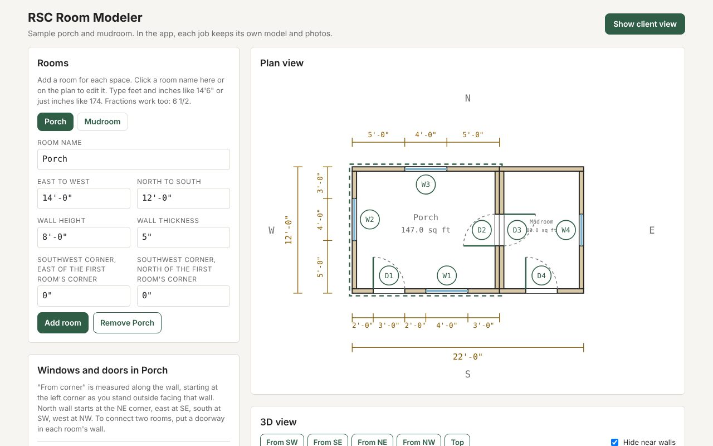
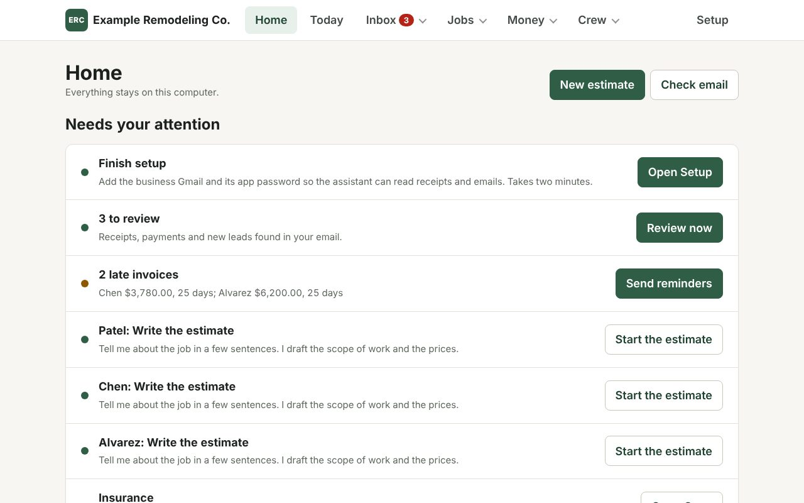
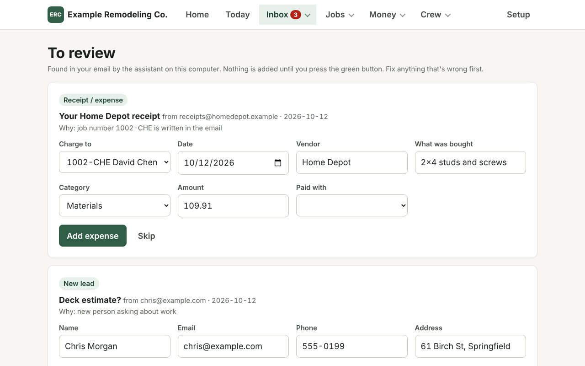
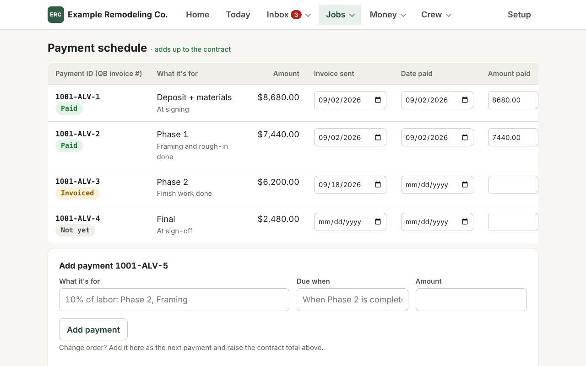
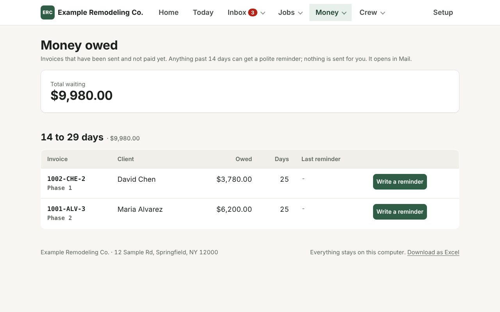
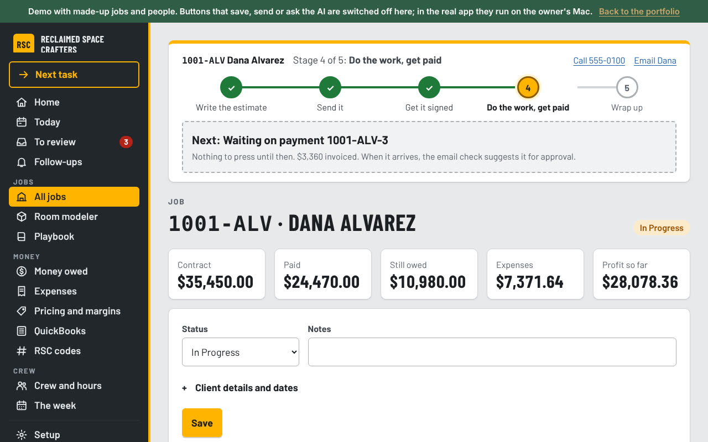

01 / 12Office appA small business, run with AI
RSC Tool
office app + job tracker
Two tools for a small remodeling business: an operations app that runs entirely on one Mac, reads the business inbox with a local AI model and never touches the books without the owner's approval, and a phone-first job tracker that shows what each job really earns once crew hours are counted.
Click through the demoThe demo is the real app's pages filled with made-up jobs; saving and AI are switched off.
The problem
Jobs, phased payments and expenses lived in a spreadsheet. Receipts, client payments and new leads arrived by email. Estimates, contracts and change orders were written by hand, and nobody could say what a job had cost in labor until it was over.
The constraints shaped everything. The owner is not a programmer, client data had to stay on his computer, and nothing could reach the books or a client without his say.



What it does
Inbox to books
Every 30 minutes a local model reads the inbox read-only and returns a fixed JSON shape at temperature 0. Plain code then matches each receipt, payment or lead to a job: a job ID in the email first, then a unique street address, then a unique client surname. If two jobs fit, it asks.
Labor cost per job
Labor per crew-hour is computed from the estimate's own crew and duration lines, with part-timers counted as half. It warns below the floor rate, compares spend with the estimate's budget, and switches to logged hours once they pass the guess.
Money that adds up
Job IDs, payment IDs and change-order IDs follow one scheme and double as invoice numbers. Payment schedules are generated by rule and tested to the cent. A change order signed with a finger on a phone updates the contract and schedule together.
Hands-free input
Any big text box takes speech through a local Whisper model of about 150 MB. Receipt photos and insurance certificates are read by a local vision model, with the job picked by the same rules as email.
Runs itself
A double-click installer needs no admin password, sizes the models to the Mac's memory, and sets up five background jobs: the app, the mail check, a Monday report, a 6 AM crew sheet and the model server. Daily backups keep 30 copies, and a doctor command checks everything.
Built from research
A market study of the local remodeling trade set the pricing checks: industry margins imply a 43% materials markup rather than 20%, and the crew-hour floor comes from local wage and billing data.



Since the first version
- Never lost. A five-stage tracker on every job, a glowing next step, and a Next task button.
- One-click Send. The estimate goes to the client as a PDF from the owner's own Gmail, only when he presses Send.
- Every attachment read. Each PDF or photo in an email becomes its own item to review.
- A downloadable Mac app, built and released automatically when the version changes.
In review now: a pricing check before an estimate goes out, a rough range and site-visit questions from a lead's photos, Google review requests, a weekly scorecard of leads and wins, and instant follow-up for website leads.
Decisions behind it
- The model drafts, code decides. Prices, totals, dates, IDs and job matching are computed in code. If a model's draft drops a required fact, the app falls back to a plain template.
- Fewer fields. A sentence like "Home Depot 109.91 studs for Smith" fills in an expense. Every page keeps a by-hand form for when the model is off.
- Nothing sent for him. Emails open in his mail app to read and send. Reminders never mention fees or lawyers.
- Readable by design. The redesign cut 14 tabs to 5 groups, set text at 18px with nothing under 15px, and made every control at least 48px tall.
Where it goes next
A productizing plan finds about 70% of the app is generic, with the owner-specific parts being configuration rather than architecture. The plan is to treat this business as customer number one, then offer done-for-you setups to three to five local remodelers, with a pilot kit and sales sheet ready.
Part two: the crew job tracker
The second tool answers one question the owner's spreadsheet could not: after materials, subcontractors and crew time, how much does a job actually leave? Hours were invisible, so every job looked more profitable than it was. The tracker puts crew time on the books as money.
Two buttons, every day
Today opens with Log hours and Log a cost, because that two-minute habit is what the whole system depends on. Everything else sits below it: what needs a decision, the week's schedule and the job board.
Money left, live
Set the crew's cost per hour once, and every job shows contract minus materials and subcontractors minus labor. Setup leads with the pricing floor: overhead per hour, break-even and the minimum billable rate.
Six screens, built for a phone
Today, Jobs, a job (work, money and history tabs), Money across all jobs, Archive and Setup, with a bottom tab bar on phones. The first version had no navigation at all below 680px, so a crew member on a phone could not get around.
Change orders and invoices
A change order does not move the contract until the customer approves it, and an approved one can be voided, which reverses it out of the total. Invoices flag when they are past due, and a queue lists costs with no receipt.
Nothing is ever lost
Every removal is reversible and goes to an archive that shows who removed it and why. Deleting a job hides it as a unit and restoring brings back everything attached. Settled records, such as a paid invoice, refuse to delete without an explicit acknowledgement.
Built for four people
The owner plus up to four crew. The first version had six roles with server-side rules, which was too much for a team that size, so the lightweight version trims permissions to roughly viewer, editor and owner.
Two versions, on purpose
- A full web app. About 6,300 lines across 24 files, with a database, six roles and backups with checksums. Roughly half was inherited from the ChatGPT and Codex first draft; the lifecycle system, query layer, all six screens and the design system are the Claude Code rewrite. It runs on the owner's computer.
- A shareable version on Claude's artifact pages. Built to be shared with a link. It stores data in the page's shared store and falls back to the phone's own storage if sharing is not available.
What testing caught
- A migration that would have hidden every job. The generated database migration filled a status column with the literal text of its own name, so no job matched "active" and all of them vanished from every screen. It was reproduced against a rebuilt copy of the live database and patched by hand.
- No mobile viewport tag. The artifact laid out at desktop width and shrank to unreadable on a real phone. It looked fine on a laptop.
- Two people logging at once. Each person writes only their own document per job, so two crew members cannot overwrite each other. A second phone's entry updated the first live in testing.
Both tools were built with AI. The Mac operations app was built in Claude Code from the owner's real estimates, contract terms and tracker. Claude wrote the code and tests within rules I set. The repo also carries a guide written for the next Claude session on the owner's Mac. It sets out how to explain changes in plain words, back up before any change, keep database migrations additive, test on a copy, and never edit contract text without review.